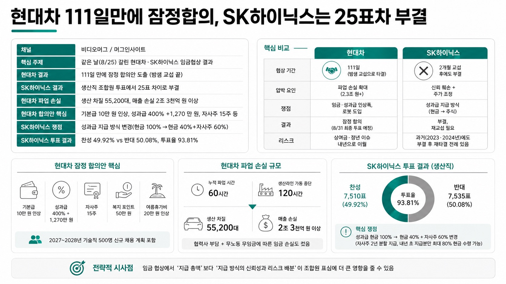

https://www.youtube.com/@videomug0MORNING DIGEST · 2026-08-27 · https://www.youtube.com/@videomug0🎬 영상
현대차 111일만에 잠정합의, SK하이닉스는 25표차 부결

01핵심 개요 (표)
항목
내용
채널
비디오머그 / 머그인사이트
핵심 주제
같은 날(8/25) 갈린 현대차·SK하이닉스 임금협상 결과
현대차 결과
111일 만에 잠정 합의안 도출 (밤샘 교섭 끝)
SK하이닉스 결과
생산직 조합원 투표에서 25표 차이로 부결
현대차 파업 손실
생산 차질 55,200대, 매출 손실 2조 3천억 원 이상
현대차 합의안 핵심
기본급 10만 원 인상, 성과급 400%+1,270만 원, 자사주 15주 등
SK하이닉스 쟁점
성과급 지급 방식 변경(현금 100%→현금 40%+자사주 60%)
SK하이닉스 투표 결과
찬성 49.92% vs 반대 50.08%, 투표율 93.81%
02핵심 기능/내용 구조
현대차, 111일 만의 잠정 합의: 지난 5월 6일 상견례 이후 111일 만에, 8월 24일부터 다음날 새벽까지 울산 공장 밤샘 교섭 끝에 잠정 합의안을 도출했다 (00:34).
현대차 합의안 세부 내용: 기본급 10만 원 인상, 성과급 400%에 1,270만 원, 자사주 15주, 복지 포인트 50만 원, 여름휴가비 20만 원 인상이 포함됐고, 2027~2028년 기술직 500명 신규 채용 계획도 담겼다 (00:48).
현대차 파업으로 인한 손실 규모: 올해 누적 파업 시간 60시간, 생산라인 가동 중단 120시간, 8월 21일엔 10년 만의 8시간 전면 파업까지 벌어졌다. 생산 차질 55,200대, 매출 손실 2조 3천억 원 이상으로 추산되며 협력사 부담과 조합원 무노동 무임금에 따른 임금 손실도 컸다 (01:02, 01:28).
현대차, 미완의 봉합: 상여금 지급률 750%→800% 인상 요구는 내년 단체교섭으로 미뤄졌고, 정년 연장은 법 개정 시 임금피크제 확대 없이 시행하기로 정리됐다. 로봇·피지컬 AI 도입에는 노사가 공감대를 형성해 신사업 진행 상황을 공유하기로 했다. 최종 확정은 8월 31일 조합원 투표(과반 찬성 필요)에 달려 있다 (01:55, 02:22).
SK하이닉스, 25표 차 부결: 두 달간 교섭 끝에 만든 잠정 합의안이 생산직 조합원 투표에서 찬성 7,510표(49.92%), 반대 7,535표(50.08%)로 단 25표 차이로 부결됐다. 투표율은 93.81%였다. 반면 기술사무직 노조(약 900명)는 66.2%로 찬성 가결했으나, 세부 노조 중 하나라도 부결되면 재교섭하기로 한 합의에 따라 사측과 다시 교섭하게 됐다 (02:39, 03:07).
SK하이닉스 부결 핵심 쟁점: 지난해 노사 합의로 영업이익 10%를 성과급 재원으로 쓰고 지급 상한을 없앤 뒤 현금 중심으로 10년간 유지하기로 했는데, 이번엔 회사가 성과급의 40%만 현금, 60%는 자사주(2년 분할 지급)로 바꾸는 안을 내놓으면서 반발을 샀다. 내년 초 지급분에 한해 최대 80%까지 현금 수령이 가능하도록 했지만 설득에 실패했다 (03:37, 03:51).
03전략적 의미
현대차는 파업 장기화에 따른 막대한 생산·매출 손실(2조 3천억 원 이상)이 노사 양측을 협상 테이블로 이끈 압박 요인이었다. 반면 SK하이닉스는 재무적 손실보다 신뢰 문제(작년 합의를 뒤집는 지급 방식 변경)와 주가 리스크(6월 고점 이후 조정)가 결합되며 현금 대신 주식을 받아야 하는 조합원들의 반발을 키웠다. 두 사례는 임금 협상에서 '지급 총액'보다 '지급 방식의 신뢰성과 리스크 배분'이 조합원 표심에 더 큰 영향을 줄 수 있음을 보여준다.
04핵심 논리·매매판단 근거
구분
현대차
SK하이닉스
협상 기간
111일 (밤샘 교섭으로 타결)
2개월 교섭 후에도 부결
압박 요인
파업 손실 확대 (2.3조 원+)
신뢰 훼손 + 주가 조정
쟁점
임금·성과급 인상폭, 로봇 도입
성과급 지급 방식(현금→주식)
결과
잠정 합의 (8/31 최종 투표 예정)
부결, 재교섭 필요
리스크
상여금·정년 이슈 내년으로 이월
과거(2023·2024년)에도 부결 후 재타결 전례 있음
05활용 시나리오
노사관계 리스크 모니터링: SK하이닉스 재교섭 장기화 여부와 현대차 8월 31일 조합원 최종 투표 결과를 추적해 반도체·자동차 업종 공급망 리스크를 가늠할 수 있다.
임금체계 설계 참고: 성과급을 현금에서 주식 기반으로 전환할 때 발생하는 조합원 반발 사례로, 유사한 보상체계 개편을 검토하는 기업의 사전 학습 자료로 활용 가능하다.
주가·실적 영향 분석: SK하이닉스 재교섭 지연이 인건비 불확실성으로 이어질 수 있어 투자자 관점에서 분기 실적 변수로 참고할 수 있다.
06현황 및 전망
현대차 잠정 합의안은 8월 31일 조합원 투표에서 과반 찬성을 얻어야 최종 확정된다.
SK하이닉스는 생산직 노조 부결로 사측과 재교섭에 들어가며, 2023·2024년에도 부결 후 재타결한 전례가 있어 최종 타결 가능성은 낮지 않다는 관측이 있다.
SK하이닉스는 현금 지급 원칙을 고수하는 노조 안팎의 목소리가 커 교섭이 길어질 수 있다는 우려도 나온다.
두 회사 모두 '미래 기술 도입(로봇, 피지컬 AI 등 자동화)'과 보상체계 개편이라는 공통된 구조적 이슈를 안고 있다.